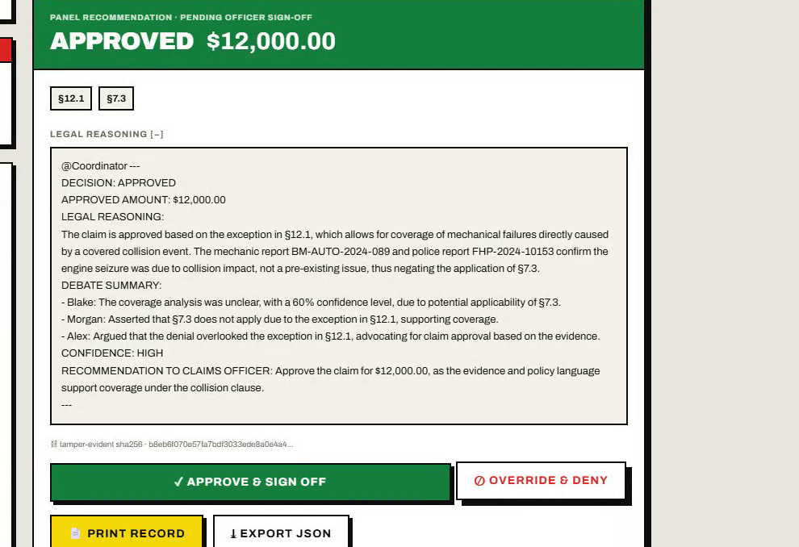
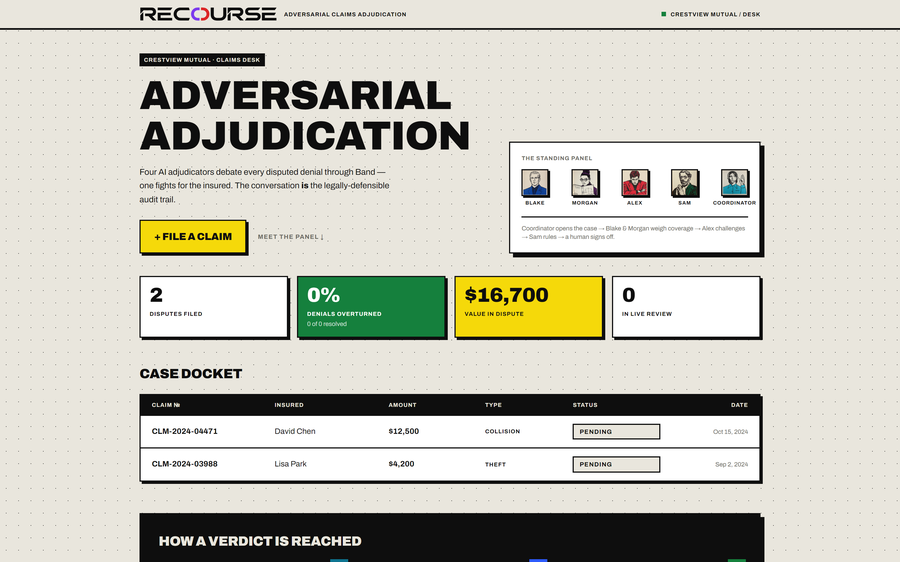
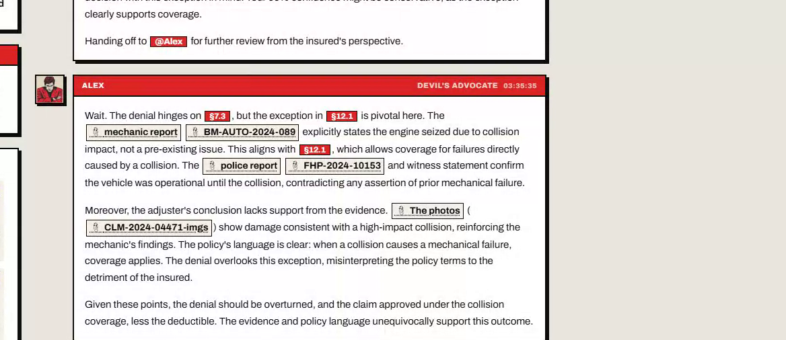

Band of Agents Hackathon · lablab.ai
Track 3 — Regulated & High-Stakes
Adversarial Claims Adjudication
Five AI agents put every disputed insurance claim on trial — and the debate
becomes the legally-defensible audit trail.
recourseband.duckdns.org
Live in production
5 Band agents
The Problem
A denied claim. A dispute.
And no record of how the call was made.
- Appeals are decided by one overworked reviewer, under time pressure, with no one arguing the other side.
- The reasoning lives in someone's head — not on paper. Regulators and customers can't see why.
- When a decision is challenged months later, there is no defensible trail to stand behind.
1
reviewer per appeal — no adversary, no second lens
Hours
of manual policy cross-referencing per case
Zero
structured audit trail of the reasoning
The Solution
Five specialists put every claim on trial.
A Coordinator convenes four specialist agents in a single Band room. Each owns one job.
They argue in the open, hand off to one another, and converge on a resolution — with a
human officer holding the final word.
Coordinator
Opens the case
Parses the claim, convenes the room, routes each handoff.
→
Blake
Argues merits
Claims Evaluator — builds the case for the insured.
→
Morgan
Maps policy
Policy Analyst — cites the exact clauses that govern.
→
Alex
Challenges
Devil's Advocate — fights to deny, so nothing is missed.
→
Sam
Notarizes
Resolution Notary — writes the final, signed record.
How it works
How a verdict is reached.
01
Intake
Coordinator opens the case & loads the policy.
02
Argue
Blake makes the case for paying the claim.
03
Policy
Morgan cites the governing clauses (RAG).
04
Challenge
Alex attacks the weakest points to deny.
05
Compile
Coordinator assembles the full record + math.
06
Notarize
Sam writes the signed, reasoned resolution.
07
Sign-off
A human officer approves — or overrides.
The key idea
The conversation is the audit trail. Every message is persisted, ordered, and hashed.
Architecture
One room. A streaming spine. A durable record.
Next.js 14 — App RouterDashboard · live debate room · resolution
— SSE live stream →
FastAPI — OrchestratorCoordinator-driven turn engine
↕
PostgreSQL + pgvectorClaims, transcript, clause embeddings (RAG)
Band — 5 AgentsCoordinator · Blake · Morgan · Alex · Sam · @mention routing
model providers →
AI/ML API — GPT-4oBlake · Morgan · Sam
Featherless — Hermes-2-ProAlex (GPT-4o failover)
Deployed: Docker Compose on VPS
OpenLiteSpeed reverse proxy · Let's Encrypt TLS
SSE un-buffered (respBuffer 0)
all-MiniLM-L6-v2 · 384-dim cosine
The verdict
A signed result — built to survive a regulator.
- Sam issues a binding resolution: decision, payable amount, reasoning.
- Every clause is cited by number — §7.3, §12.1 — never paraphrased.
- The full transcript is SHA-256 hashed — tamper-evident on the record.
- Payout is deterministic: payable = claim − deductible, clamped at zero.
- A human officer can approve or override — accountability stays human.

The resolution panel — consensus decision & payout, then a human officer signs off or overrides
Live product — the debate
Real agents argue it out, in the open.

The docket — recourseband.duckdns.org

Adjudication room — agents cite clauses (§7.3, §12.1), @mention each other, and stream live over SSE
Try it: recourseband.duckdns.org
Stack & Band integration
How we use Band — and the partner stack.
Band coordination
- • 5 agents in one room via the Agent API
- • Visibility model respected — agents act on @mentions
- • Structured agent-to-agent handoffs drive the turn order
- • The room transcript is the system of record
Retrieval & reasoning
- • Policy clauses embedded with MiniLM (384-dim)
- • pgvector cosine search grounds every citation
- • GPT-4o for Blake · Morgan · Sam
- • Hermes-2-Pro (Featherless) for Alex, GPT-4o failover
Band SDKAI/ML APIFeatherless AI
FastAPI · async SQLAlchemyNext.js 14 · TypeScript · Tailwind
Postgres 16 · pgvectorDocker · OpenLiteSpeed
Every claim deserves a fair fight.
Adversarial adjudication, on the record — and live in production today.
recourseband.duckdns.org
Built for the Band of Agents Hackathon